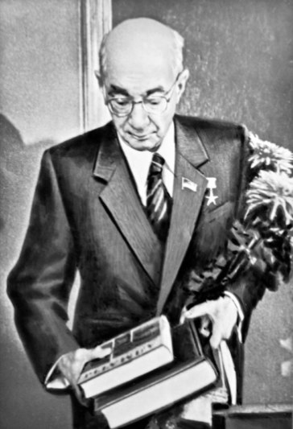
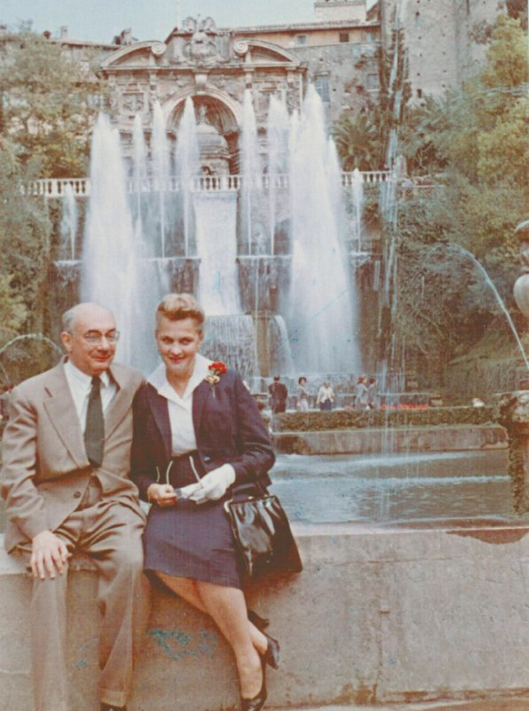

Микола Бажан - це поет підкорювач хаосу
Віра Агєєва
ПОВЕРНЕННЯ В КИЇВ
За студентських часів Київ, а точніше будиночок на вулиці Леніна, 94 був домом Миколи Бажана. Тепер ним стала квартира №31 на першому поверсі в Роліті. Щоправда, поет не ділиться враженнями від нового помешкання, але можна припустити, що зміна з просторої чотирикімнатної квартири в будинку «Слово» на трикімнатну з невеличкою кухнею могла бути непростою.
Бажан та його перша дружина Гаїна Коваленко
Головною проблемою було те, що побудова квартир не була доведена до ладу. Тож довелося Миколі Платоновичу разом із дружиною Гаїною Коваленко ще кілька місяців пристосовувати житло до нормальних умов. Саме через це їх донька Майя переїде в Роліт лише влітку 1935 року. Вона приятелювала з иншими дітьми ролітівців.
У той самий час було з чого радіти, адже поет входив у першу чергу заселення в кооператив, до якої могли потрапити лише найвідоміші митці. Хоча Бажан не входив до числа найбільш провідних майстрів слова, яких друкували навіть у тодішніх підручниках, тому претендувати на чотирикімнатну квартиру не міг.
АРЕШТ ЧИ ПРЕМІЯ?
Закінчивши з переїздом, поет продовжив літературну діяльність: писав вірші, займався перекладами, виступав на зборах, друкувався в газетах – поки НКВД тихцем збирало на нього компромат. (Справу формуляр на Миколу Бажана відкрили ще в 1929 р.) До прикладу, 25 червня 1936 року працівник Луб’янки, начальник 6-го відділення секретно-політичного відділу капітан держбезпеки Стромін склав спецповідомлення про антирадянську групу російських літераторів. У цьому донесенні, однак, ідеться й про мешканців Роліту: «После первых <...> совещаний членами группы была установлена связь с украинскими писателями Бажаном, Рыльским, Панчем, Копыленко… Со своей стороны Бажан близко связан с рядом националистических поэтов Грузии, и лето прошлого года провел в Грузии, работая над переводами грузинских поэтов на украинский язык». Ще в 1935 р. в ОДПУ була заведена кримінальна справа № 1377 на Бажана – звинувачення в членстві підпільної «Української військової організації».
Газети і журнали, в яких вчора друкували схвальні критичні статті про Бажана – сьогодні закидали усе більше звинувачень: правдивих і не зовсім. «Час був складний, — згадував Сава Голованівський, друг і сусід Бажана по будинку, — упереджена вульгарно-соціологічна критика не давала перепочинку, звіти про суворі обговорення та статті, нерідко схожі на судові вироки, з’являлися щоразу, і Бажан поруч із кількома іншими талановитими письменниками були серед тих, кому перепадало найбільше».

Микола Бажан останнє фото
Поет не витримував подібного натиску і в березні 1936 р. «зізнався» в усіх звинуваченнях і погодився на співпрацю з ДПУ. Його завербували під псевдо Петро Уманський, але великої користі з нього не було – в 1941 р. зв’язок з ним було втрачено.
У зловісному 1937 році виявився недолік першого поверху. Коли біля будівлі зупинявся Чорний Ворон і з нього виходили мужчини з черговим орденом на арешт, то перша квартира, до якої вони наближалися була Бажанова. Пройдуть повз – сьогодні минеться, а якщо зупиняться – це за ним. Навіть попри свій вірш «Людина стоїть в зореноснім Кремлі...» він не був визнаний владою. Тому причин для страху було багато. Поет понад рік спав просто в штанях, щоб у разі арешту не шукати навпомацки окуляри аби одягнутися (він з дитинства недобачав) і виглядати безпомічно перед своїми карателями.
Ось ще приклади доносів на Миколу Бажана:
«Погиб Хвылевой, громадный талант, не дают писать Антоненко-Давыдовичу, Косынке, Плужнику, Вороному. Посмотрите на морды людей наших, сидящих в президиуме… Вот Кулик например в своем докладе ругает фашистского поэта Маланюка кретином, а на самом деле это крупнейший и талантливейший мастер Западной Украины. Кому нужен этот съезд, эта кукольная комедия, где никто все равно не смеет сказать искреннего слова, где все из-под палки обязаны кричать «ура» Соввласти, Сталину, Горькому. Кому это нужно. Ведь заграницу все равно не обманешь. Там прекрасно информированы о том, что Москва зажимает всячески литературу национальных республик, что она только в декретах кричит о расцвете национальных культур, а на самом деле давит эти культуры железным кулаком…» – на Першому з’їзді радянських письменників 1934 року.
Агент «Журналіст» також повідомляє, як Бажан у приватній розмові скаржився, що «…На торжественном обеде у Горького наши литературные вожди Щупак, Иван Ле, Кириленко, Кулик по приказанию пьяного Кагановича пели националистические украинские песни, здесь давно запрещенные. Это ли не издевательство над украинцами. Это ли не мерзость…» «…Забитая, запуганная и загнанная Украина… У нас как бы нарочно, назначая в вожди идиотов, гасят украинскую культуру» (донос від 11 грудня 1934 року).
З цієї ж приватної розмови дізнаємося, як Бажан бачив Росію: «Россия хищническая и солдатски бескультурная, и при Алексее Михайловиче и при Сталине, одинаково стремится поработить Украину. Нам чужда Москва, мы с незапамятных времен были посетителями западной культуры, мы европейцы, а не вонючие азиаты-лапотники».
Усе справді могло закінчитися трагічно, якби не один випадок. У 1937 р. Микола Бажан разом з дружиною Гаїною Коваленко переклав поему Шота Руставелі «Витязь у тигровій шкурі». На черговому засіданні політбюро Сталін згадав про це. З того, що переказував Олександр Корнійчук Саві Голованівському відбулося це так: «Виявилося, що в списку представлених до нагороди Бажана не було — похмура критична хмара тяжіла над його іменем. Але перед затвердженням списку Сталін згадав, що на Україні хтось добре переклав поему Руставелі «Витязь у тигровій шкурі» і таку важливу роботу потрібно як слід відзначити. Коли йому назвали перекладача, він власною рукою дописав прізвище Бажана — вгорі, тобто для відзначення найвищою нагородою».
Майя Бажан добре пам’ятає день, коли сім’я дізналася про нагороду. Звичайний ранок, усі чаюють, аж раптом приходить якийсь письменник і каже про орден. Пізніше завітав П.Тичина (сусід по під’їзду) і також привітав з винагородою, а Майї подарував олівці для малювання. На згадку вони всі разом зробили фотографію… Ролітівці стверджували, що в день нагородження бачили Миколу Платоновича на подвір’ї. Наприклад, усе той же Сава Голованівський стверджує: «Я зустрів його того дня на нашому подвір’ї, він був блідий і розгублений, наче в чомусь завинив. Не дивно — адже після всього, що він читав про себе в пресі, можна було чекати лише найгіршого».
Після смерти Сталіна Микита Хрущов зізнався Бажану, що того справді планували арештувати якби не переклад поеми.
ЗМІНИ В ОСОБИСТОМУ ЖИТТІ

Микола Бажан з дружиною Ніною
Висока нагорода стала не лише порятунком життя, а й допомогла вирішити певні особисті проблеми. Ще в 1938 році поет побачив Ніну Лауер на творчому вечорі відомого мхатівця Василя Качалова, що відбувся в Будинку Червоної Армії (нині — Центральний будинок офіцерів Збройних сил України) і… Закохався до нестями. Вони почали зустрічатися і знав про це на той момент лише Ю.Яновський, з яким Микола Бажан дружив ще зі студентських років. «Я сказав Юрі, які рішучі зміни входять у моє особисте життя, — згадував Микола Платонович. — Він зрозумів мене. Настала осінь 1938 року. Ми рушали на прогулянки втрьох. Моя майбутня дружина Ніна, Юра, я». Після отримання ордену Ленін перешкода для змін зникла. Тож у 1939 р. між чоловіком і дружиною відбулася серйозна розмова. Микола Бажан зізнався, що покохав иншу й попросив його відпустити. І Гаїна Коваленко – відпустила.
Виникло нове питання: як роз’їхатися? Знову на допомогу прийшов орден і вірний друг Юрій Яновський. Бажану, як кавалеру високої нагороди, дісталося п’ятикімнатне помешкання в нещодавно збудованому «панському» корпусі Роліту. Три кімнати дісталося Гаїні Симонівні з Майєю та батькам Бажана, решта дві – Яновському із дружиною Тамарою Жевченко. А Микола Платонович і Ніна Володимирівна заселилисяf в колишнє помешкання друга поета, двокімнатну квартиру №76.
Юрій Яновський і Микола Бажан
«Юра і Тамара... оселилися в двох кімнатах квартири, де жила моя родина, батьки, — писав у спогадах Бажан. — Вони раділи, що мають таких сумирних і милих сусідів, якими було подружжя Яновських... Моя мати любила Юру. Піклувалася його здоров’ям, допомагала Тамарі». Наприкінці 1940 р. подружжя переїхало з Роліту в зручнішу квартиру в колишньому будинку барона В. Ікскюль-Гільденбанда на вул. К.Лібкнехта (тепер Шовковична), 19. З кінця того ж року став членом Президії Спілки радянських письменників України.
З першою дружиною зберіг товариські стосунки. Відвідував її і допомагав матеріяльно. Після евакуації в 1944 р. Микола Платонович подбав, щоб Гаїні Симонівні з Майєю надали окрему трикімнатну квартиру. За його підтримки колишня дружина в голодні повоєнні роки мала змогу влаштовувати «суботи» – варила вареники, які залюбки куштували Остап Вишня, М.Рильський, О.Копиленко, П.Панч, В.Собко, инші ролітівці.
Лише після того, як Гаїна Коваленко переїхала на теперішню вулицю Ломоносова в 60-х рр., Бажан перестав відвідувати Роліт.
НАГОРОДИ ТА ПРЕМІЇ
1937
Республіканська премія Грузинської РСР
1939
орден Леніна
переклад поеми Шота Руставелі «Витязь у тигровій шкурі» українською мовою
1943
орден Червоного Прапора
1946
Сталінська премія
книга «Сталінградський зошит»
1948
орден Трудового Червоного Прапора
1949
Сталінська премія
цикл «Англійські враження»
1954
орден Леніна
1960
орден Леніна
1964
орден Леніна
1964
Почесна грамота Президії Верховної Ради Української РСР
1965
Республіканська премія Української РСР імені Тараса Шевченка
поема «Політ крізь бурю»
1967
орден Трудового Червоного Прапора
1971
Державна премія УРСР у галузі науки і техніки
шеститомна праця «Історія українського мистецтва»
1974
орден Леніна
1974
звання Героя Соціалістичної Праці, Орден Леніна, золота медаль «Серп і Молот»